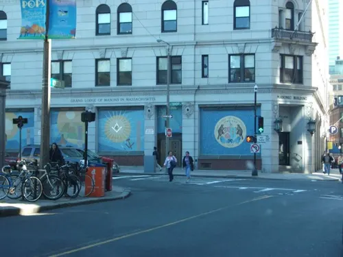
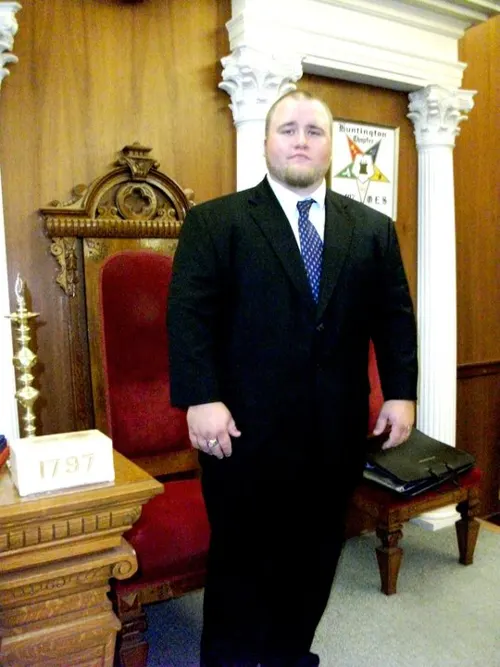
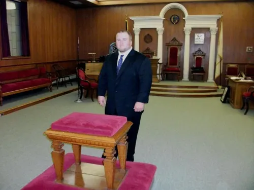
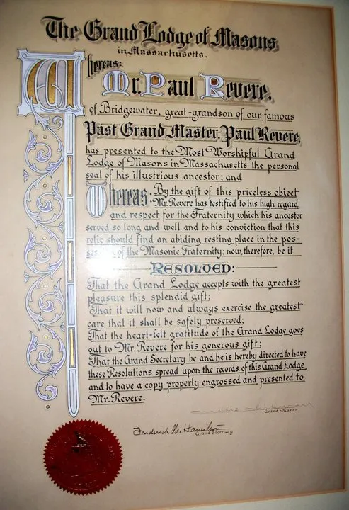
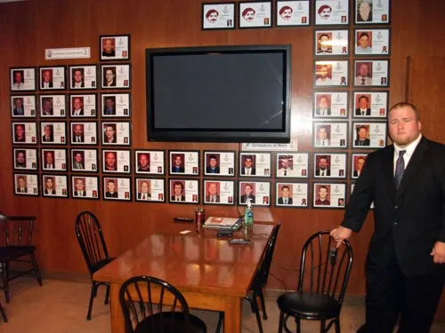
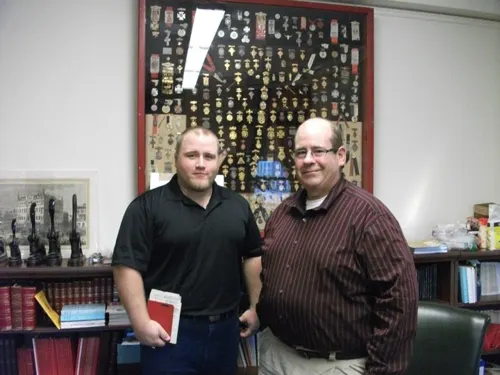
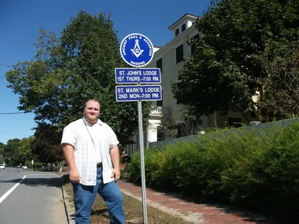
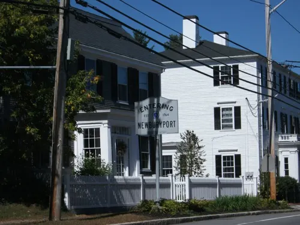

Massachusetts
September 2010

In September 2010 I traveled through Massachusetts.
Stops included the Grand Lodge building in Boston, lodge-room interiors, a Paul Revere document on the wall, and the St. Johns Lodge street sign.














